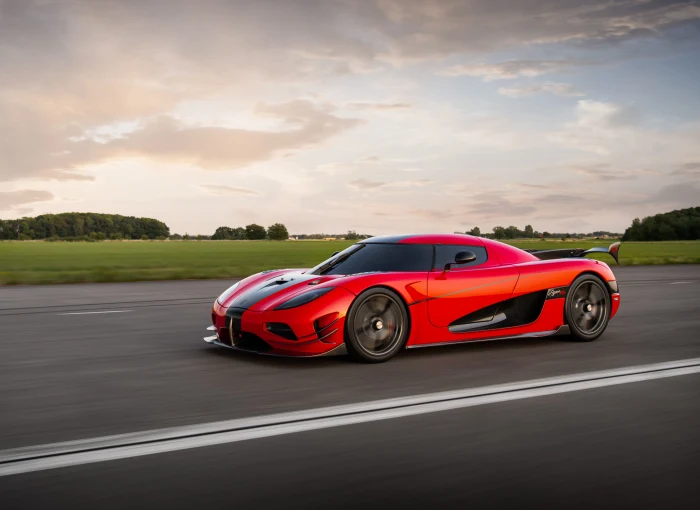

Let’s take a look at the fastest cars in the world for 2025.
It wasn't that long ago that the notion of reaching 200 miles per hour in a car, on a road, seemed basically impossible. As you likely know by now, that time has passed. Once that threshold was crossed, the automotive world immediately began eyeing the next triple-digit benchmark: 300 miles per hour.
The Fédération Internationale de l'Automobile (FIA) sets the rules for measuring top-speed runs. This international organization advocates the interests of many groups in the automotive industry and governs numerous motorsport races, including Formula One. According to its website, "Record Attempts may be attempted on straight-line playa, salt or tarmac courses, where they are averaged over two runs in opposing directions, or over distance or time endurance runs on closed racetracks."
While the Bugatti Chiron Super Sport 300+ did cross the 300 mph mark, it did so in a unidirectional run rather than the "legal" two runs in opposing directions. According to the FIA's rules, that means it is not eligible to be considered the fastest car in the world, although it is the fastest by proven top speed.
Others, like the Koenigsegg Jesko Absolut, have an "estimated" top speed of over 300 mph, or 330 mph in this case. That has yet to be proven, given the difficulty of finding a long enough road and good enough tires. Since calculations don't set records, it is not eligible to be considered the fastest car in the world.
For our purposes, we'll consider the car that followed the FIA's rules and set a world record to be "The Fastest Car in the World."
The fastest car in the world is the Koenigsegg Agera RS (277.87 MPH)

The Koenigsegg Agera RS is, by all definitions, a beast. The RS was the definitive production Agera, combining the technology of the One:1 with the features of the Agera R and Agera S. From the factory, the RS's 5.0-litre V8 engine makes 1,160 hp on regular pump gas. If that's not enough power, the optional "1-megawatt" package brings that horsepower figure to 1,341 hp.
Factory test driver Niklas Lilja took a Koenigsegg Agera RS with the 1 MW package to a top speed of 277.87 mph on Nevada's State Route 160, just outside of Pahrump. Not only did this run abide by the FIA's rules, but the Swedes went through months of paperwork and meetings with Nevada officials before they got the state's seal of approval.
The Agera RS produces 992.08 lb of downforce at 155.34 mph, a staggering figure that undoubtedly helped it in its high-speed run. The model was technically limited to 25 units, although two more served as a factory development car and as a replacement for a damaged customer car. Each one could be modified by its owner to their heart's content.
his remarkable combination of aerodynamic prowess and exclusivity cements the Agera RS as one of the most extraordinary hypercars ever built. Its ability to generate immense downforce at high speeds not only enhances stability but also showcases Koenigsegg’s engineering mastery. With only 25 production units—plus two additional models—each tailored to its owner's preferences, the Agera RS remains a rare and highly sought-after masterpiece, solidifying its legacy in automotive history.
The five fastest cars in the world in 2025 by FIA standards
- Koenigsegg Agera RS: 277.87 mph
- Bugatti Veyron 16.4 Super Sport: 267.856 mph
- SSC Ultimate Aero: 256.14 mph
- Bugatti Veyron EB 16.4: 253.81 mph
- Dauer 962 Le Mans: 251.4 mph